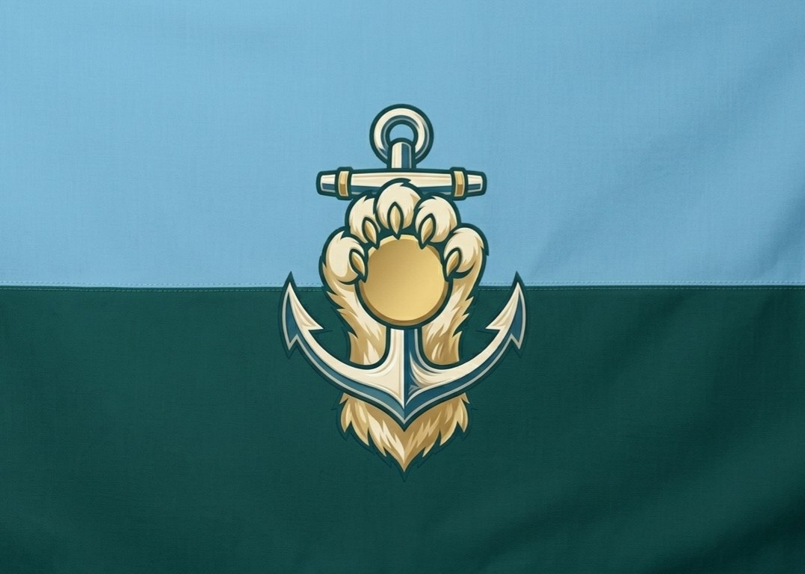

Базовые сведения о Чиллграде
Чиллград — это суверенное IT-морское государство, возглавляемое Верховным Администратором / Главным Дрейфующим Teddy Bear. Основная цель — безопасность, аптайм и полный отказ от излишней суеты.
- Название: Суверенная IT-морская Республика Чиллград.
- Столица: AFK City.
- Валюта: Штиль (STL), обеспеченная аптаймом серверов.
- Девиз: «Всё по-тихому, но всё серьёзно».
- Основная внешняя политика: абсолютный нейтралитет.
Государственные печать и флаг
У Чиллграда есть собственная печать и флаг, которые отражают его мирную, технологическую и морскую природу.
Печать государства
Круглая печать с лапой, совмещённой с якорем, окружённая надписью «Суверенная IT-морская Республика Чиллград» и «AFK CITY».

Флаг Чиллграда
Три горизонтальные полосы: тёмно-синяя, серая и чёрная. В центре белый силуэт морского ежа.

Инфраструктурный профиль
Государство построено как распределённый IT-мегаполис. Основа Чиллграда — автоматическая логистика, морские хабы и умные маяки, которые обеспечивают безопасность без лишней суеты.
- Центральный хаб «Корень» отвечает за управление всей инфраструктурой.
- Порты работают на роботе и автономных системах.
- Транспортировка грузов идёт без шумных фур и лишней бюрократии.